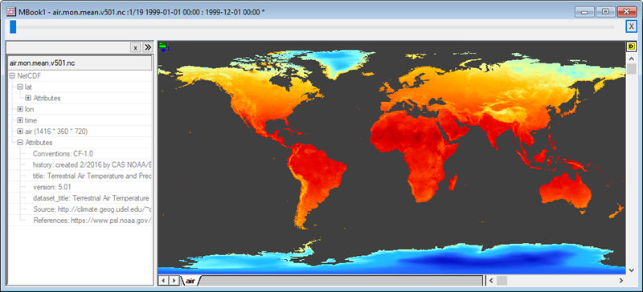

ファイルに接続
Connect-to-File
データコネクタは、Originワークシート/行列と、PCまたはローカルネットワーク上のデータファイルの接続を構築します。一般的なファイルが多くサポートされています。
コネクタとインポート機能の違いについては、FAQ-1020 コネクタとインポート機能の違いはなんですか?を参照してください。
 | 新規追加メニューで新しいコネクタタイプを追加するには、
追加のファイルタイプ用のコネクタが、データ: ファイルに接続メニューの一番下のメニューアイテム新規追加を選択して追加できます。これにより、アプリセンターが開き、未インストールのコネクタアプリのみ表示します。Download and Installアイコンをクリックして、コネクタアプリをPCにインストールします。
あるいは、OriginLab社WebサイトのOriginファイル交換の場を開き、リストからコネクタを選択します。アプリページで、Download Fileボタンをクリックし、ダウンロードが完了したらOriginワークシートにファイルをドラッグします。アプリのドキュメントは、アプリページの説明セクションを確認してください。
ファイルに接続メニューをカスタマイズするには、
データ：ファイルに接続：カスタマイズ...を選択すると、データ：ファイルに接続メニューをカスタマイズできます。
インストールされているすべてのデータコネクタがここに一覧表示されます。またチェックボックスを使用して、データ：ファイルに接続メニューに表示するコネクタを決定できます。
|
ブックにコネクタを追加
ブックにデータコネクタを追加してデータをインポートする方法
- ワークシート/行列をアクティブにして、データ: ファイルに接続: データタイプを選択します。
- 開くダイアログボックスから目的のデータファイルを選択します。
インポートオプションを構築する、コネクタのダイアログボックスが開きます。
- MS ExcelやMATLABのような複数ページのファイルでは、インポートする初めのシートを選択します。（例：Excelシート）インポートすると、折りたたみ可能なデータナビゲータパネルがブックに追加され、残りのシートのファイルにアクセスできるようになります。
- 接続されたファイル名はブックのロングネームとして追加されます。（CSV、Originファイルには適用されません。）
テキスト／CSVコネクタ
テキスト／CSVコネクタはCSV、TXT、ASCなどのテキストファイルをインポートするために使用します。
- 自動でメインヘッダ行を決定するか、チェックボックスのチェックを外して列ロングネーム、単位、コメントを含むメインヘッダとサブヘッダの指定を手動で指定します。ヒント: 自動検出されたメインヘッダー行の数が青文字で表示されます。
- メインヘッダ行を自動検出または、手動で指定すると、インポートダイアログにファイルヘッダーの保存先ドロップダウンリストが表示され、ファイルヘッダの内容をワークシートラベル行またはブックオーガナイザに保存することができます。
| CSVインポートオプション
|
メインヘッダ行がある場合のCSVインポートオプション
|
|
|
|
- インポートされたファイル（一部の*.pilファイルなど）にヘッダとデータ部分を分割するための区切り行がある場合（「END OF headER」など）、メインヘッダ行の横にある自動をオフにし、メインヘッダ行に0を入力し、メインヘッダ行の終了チェックボックスにチェックを入れ、コンボボックスに定義された区切り文字テキストを入力します。
- 最初の50行をプレビューとしてインポートしたり、部分インポートのオプションも利用可能です。
- 他のオプションボタン（OKの左）をクリックするとオプションを利用できます。
- スパークラインの追加: インポートの際スパークラインを有効にします。インポート時にスパークラインを無効にするには、@IMPS = 0に設定します。
- ファイル名による名前変更：CSVのみ。シートとブックロングネームのオプションがあります。
- デフォルトに保存: CSVのみ。スパークラインとファイル名による名前変更の設定をデフォルトに設定するボタンです。
- インポート後に実行するLabTalkスクリプト: インポート時のデータの後処理を行うスクリプトを実行します。
| インポート後に実行するLabTalkスクリプト はヘッダ行でなくデータセル () から変数を抽出するために使用できます。次のセクションのサンプルを参照してください。
|
- CSVデータコネクタでデータをインポート後、選択した列で右クリックしてソート（ワークシート）を選択して全ワークシートをソートできます。
- 複数のCSVファイルを同じワークシートにインポートし、行ごとに追加する場合は、LabTalkスクリプトを使用してそれを行うことができます。LabTalkドキュメントページで「EX2」を参照してください。
データセルから変数を抽出
データセルから情報を抽出して、ワークシート変数に保存するには、インポート後に実行するLabTalkスクリプトダイアログを使用します。
以下のサンプルでは、最初の列に実験日が入力されており、それをユーザー定義変数として抽出します。以下のインポート後に実行するLabTalkスクリプトを実行してシートレベルの文字列変数 "MDate" を追加し最初のセル値を割り当てます。
page.info.add(user);
page.info.user.addsection(variables);
string str1=left(col(A)[1]$, 10)$;
page.info.user.variables.addstring(MDate, "%(str1$)");
del col(A);
インポート後、ワークブックオーガナイザでこの変数"MDate"を確認できます。
データブロックマーカー
ファイルにデータと非データが混在している場合、データブロックを表す文字を定義できます。
- 開始ボックスを使用して、データの開始を示す文字の並びを定義します。文字の並びがセクション表記を使用している場合（つまり、[Data] のように角括弧で囲まれている場合など）、終了は空白のままにしてください。
- セクション表記を使用する場合、メインヘッダ行を自動 にしてください。
- ワイルドカードのアスタリスク(*)とクオーテーションマーク(?)が使用可能です。
- データブロックの終了に空の行がある場合は、終了を<blank>に指定できます。
ファイル拡張子の編集
CSVコネクタのファイル拡張子の設定を編集できます。これは、コネクタを開いたときにファイルブラウザのファイルの種類ドロップダウンリストに表示されます。
ファイル拡張子の編集方法
- Originワークスペースの右側にあるアプリギャラリーのコネクタタブをアクティブにします。
- CSV Connectorアイコン上で右クリックしてファイル拡張子の編集を選択します。
- 拡張子は";"で区切ります。
- リセットボタンをクリックするとシステムデフォルトの牡蠣調子の設定にリセットできます。
- Origin.iniファイルでファイル拡張子を編集することもできます。
Excel
Excelコネクタの情報は、Excelからのインポートを参照してください。
JSON/XMLファイル
データコネクタブラウザが開きます。
上部パネルでインポートファイルの構造をロードします。
- ブランチをクリックすると右パネルにメタデータを表示します。
- 目的のブランチを選択して下向き矢印をクリックし、下部パネルに追加します。
- OKボタンをクリックして選択したデータへの接続およびインポートをします。
- ファイルに複数の配列、変数などが含まれている場合は、必要に応じてデータナビゲータを使用して追加のデータに接続します。
ヒント
- MATLAB、JSON、NetCDFファイル（ローカルファイルまたはWebファイル）に接続する場合、データファイルに再接続するときにカスタムシート名が保持されます（データコネクタメニュー
 からすべてのブックをインポートまたはインポート）。これは、ツリーフレームワークを使用するファイルタイプにのみ適用され、ExcelやText/CSVなどの他のファイルタイプには適用されません。
からすべてのブックをインポートまたはインポート）。これは、ツリーフレームワークを使用するファイルタイプにのみ適用され、ExcelやText/CSVなどの他のファイルタイプには適用されません。
- インポートしたJSON/XML/Preship XMLファイルからのメタデータはワークブックオーガナイザに保存されます。メタデータを確認するにはワークシートの左の方にある˅のボタンをクリックしてオーガナイザパネルを表示します。ワークシートラベル行にメタデータを挿入するには、オーガナイザで目的のツリーノードを右クリックしてノードパスをコピーするを選択し、列ラベルセルに移動して右クリックし、リンクの貼り付けを選択します。
MATLAB
データコネクタブラウザが開きます。
上部のパネルには、インポートファイル内のすべての変数がツリーとして一覧表示されます。各変数の右側には、各変数をインポートできる場所を示す列があります。オプションには、ワークシート、行列シート、またはその両方があります。
- 目的のブランチを選択して下向き矢印をクリックし、下部パネルに追加します。
- ワークブックがアクティブでファイルを行列にインポートする必要がある場合には、選択するダイアログが表示されます。
-
- 新規行列ブックを使用：最もシンプルな方法です。
- 埋め込み行列ブックを使用：行列にデータをインポートしますが、行列はワークブックにシートとして埋め込まれます。
- ワークシート列（遅くなる可能性があります）：これにより、行列の各時間フレームが複数の列にインポートされるため、多数の列を含むワークシートが作成され、データが大きい場合は速度が低下する可能性があります。
- オプションを選択してOKをクリックするとデータがインポートされます。
- ファイルに複数の配列、変数などが含まれている場合は、必要に応じてデータナビゲータを使用して追加のデータに接続します。
HDFファイル
HDFコネクタは、ローカルまたはWeb上のHDF5 (.h5, .he5, .hdf5) 、MATLABのバージョン7.3のmatファイルをインポートする際に使用できます。詳細については、OriginLabのファイルの交換の場のページを参照してください。
ファイルへの接続を開始すると、データコネクタブラウザが開き、ファイル内のすべての変数がツリーとして一覧表示されます。各変数の右側には、各変数をインポートできる場所を示す列があります。次の図に示すように、オプションにはワークシート、行列シート、またはその両方が含まれます。
ファイル内の任意のノードに直接接続できます。ワークシートがアクティブで変数に行列マークがついている場合、ノードを行列ブックにインポートするか聞かれます。ただし、行列データをワークブックにインポートするように選択すると、Originは自動的にアクティブワークブック内の行列シートとしてノードを追加します。
ファイルの階層に接続すると、データナビゲータが開き、個々のノードに選択的に接続できます。前述のように、データがアクティブなシートと互換性がある場合、それらはシートにインポートされます。別のシートタイプが必要な場合は、アクティブなブックに追加されます。
HDFファイルインポートのヒント
- 他の複雑な構造のファイル (NetCDFを含む) と同様に、ナビゲータパネルのショートカットメニューがあります。HDFコネクタには、データインポートのスクリプトを作成しているユーザが関心を持つ可能性がある1つの一意のエントリ (パスをコピーする) があります。複雑なツリー構造の奥深くにあるパスをコピーするのは難しいため、エントリをクリックしてパスをコピーするを利用します。

- HDFコネクタを使用してインポートのスクリプトを作成する場合、ナビゲータパネルを表示しないことで、データのインポートを大幅に高速化できます。これは、コネクタを追加するときに引数 ("1") を追加することで実行できます。
wbk.dc.add("HDF", 1);
TDMSファイル
OriginのTDMSコネクタを使用して、.tdmおよび.tdmsファイルからデータをインポートできます。
TDMSファイルをインポートする方法
- 新規のワークブックから、データ:ファイルに接続:TDMSを選択します。ファイルを選択して、開くをクリックします。
- データコネクタブラウザで、ノードをダブルクリックするか、ブラウザ内で選択後にインポートするデータを選択ボタンをクリックします。下部パネルにノードが追加されます。接続文字列を変更すれば部分インポートも可能です。
- OKをクリックして、データをインポートします。
（ブラウザの上部にあるTDMSを選択して）すべてのノードをインポートする場合、各チャネルはchannelという名前の個別のシートにインポートされます。メタデータは各列に追加されます（ロングネーム、単位、node_source_attributes というラベルの付いたユーザーパラメーター行など）。シートにはchannelという名前が付けられ、ファイル名はブックのロングネームに設定されます。すべてのグループを同じワークシートにインポートするを選択した場合、属性は列ラベル行領域に保存されますが、シート名は変更されません。
関連のあるトピック
N42
OriginのN42 Connectorは、さまざまな放射線機器によって生成されたデータをインポートするために使用されます。
N42ファイルをインポートするには
- 新規のワークブックから、データ:ファイルに接続:N42を選択します。ファイルを選択して、開くをクリックします。
NetCDF
NetCDFファイルは、変数の配列を保存するための自己記述型のスケーラブルな形式です。科学データを交換するための柔軟な形式として設計されており、地理学の研究に容易に適応でき、大気および気候科学で広く使用されています。バージョン2021b以降、OriginのNetCDFコネクタは、地理ベースの調査で使用されるデータセットタイプを処理できるように改善されました。
- 
部分インポート（日付範囲の指定、読み取り/スキップまたは平均化）、経度変換、緯度の反転、緯度と経度によるサブ領域の指定、インポート時に行列値を変換するオプションなどに加えて、以下のような役立つ機能があります。

| 地図データを操作するときは、イメージプロットをアクティブにし、挿入メニューを使って、米国本土または世界地図の境界を挿入できます。
|
ローカルの.ncファイルをインポートする
- ワークブックや行列ブックがアクティブな状態で、データ：ファイルに接続を選択します。
- 下のデータコネクターブラウザ での操作を行います。
URLを指定してWeb上の.ncファイルをインポートする
- ワークブックや行列ブックがアクティブな状態で、データ：Webに接続を選択します。
- 開いたダイアログで、ファイルタイプをNetCDF （任意）にし、(a)最近使ったURLをクリックして、リストから.ncファイルを選択するか、(b)テキストボックスに直接URLを入力（例えば、https://psl.noaa.gov/thredds/fileServer/Datasets/cpc_us_precip/precip.V1.0.1948.nc）し、OKをクリックします。
- 下のデータコネクターブラウザ での操作を行います。
データコネクターブラウザ
- インポートしたい多次元変数（例えば、time * lat * lonなど）を選択して、インポートするデータを選択ボタンをクリックし、下部パネルにデータを追加します。ワークブックがアクティブで、ファイルインポートに行列ブックが必要な場合は、(a)新しい行列ブックを開くか、(b)アクティブワークブックに行列ブックを埋め込むか、(c)ワークシート列にデータをインポートするか聞かれます。通常、1次元変数はワークブック、多次元変数は行列ブックにインポートする必要があります。
- インポートオプションボタン（「鉛筆」アイコン）をクリックして、オプションを設定できます。ここでは、部分インポートを指定したり、経度を変換したり、行列を垂直方向に反転したり、数式を使用してデータを変換したりできます。

- OKをクリックしてインポートオプションを閉じ、再度OKをクリックしてブラウザを閉じてデータをインポートします。ファイルサイズが大きい場合は、インポート完了まで時間がかかることがあります。ファイルがインポートされると、ブックの左側にブラウザパネルが追加されます。行列ウィンドウの上側にあるスライダーで各行列オブジェクトの表示を切り替えできます。

| インポートが完了すると、コネクタアイコンをクリックしてオプションを選ぶことでインポートオプションを変更できます。
|
シェープファイル
- ローカルファイルに接続するには、データ：ファイル：Shapefileをクリックします。Webに保存されたファイルに接続するには、データ：Webに接続を選択し、URLを入力します。
- Shapefileコネクタは単純なインポートオプションダイアログを開きます。属性をロードチェックボックスを選択して、各シェープの列属性をインポートできます。列属性は、.shpファイルと同じ名前の.dbfファイルであり、同じフォルダに保存されます。WGS84に変換 チェックボックスは、距離がメートル単位のシェープファイルを、経度と緯度を含むWGSシステムに変換します。

- インポート後、ワークシートにX、Y、Feature IDの少なくとも3つの列が表示されます。X座標とY座標は、異なるセグメントを表すために欠損値で区切られています。複数のセグメントが1つのFeature IDを共有する場合があります。
詳細は、ファイルの交換ページのShapefile Connectorのページを参照してください。
Originファイル
OriginコネクタはOriginプロジェクトファイル（opj(u)）もしくはワークブック（ogw(u)）からデータをインポートします。これにより、Originファイルをデータリポジトリとして使用できます。
プロジェクトファイルであろうと複数ページのワークブックであろうと、Originファイル内のデータに接続すると、データコネクタブラウザが開きます。ここでは、インポートするデータを選択的に指定できます。ワークブックにコネクタを追加したら、データナビゲータの列を右クリックし、シートの追加と接続を選択することで、必要に応じて他のワークシートをインポートできます。
Origin 2020から、OriginコネクタはSQLのようなクエリ言語を使用してOriginファイルから目的のデータを検索と目的のデータの抽出することが可能です。

- 選択...ダイアログでクエリを選択ボタン
 をクリックして、クエリを選択ダイアログを開きます。
をクリックして、クエリを選択ダイアログを開きます。
- 例えば、プロジェクト全体を検索し、指定されたロングネームとプロット属性を持つすべての列を引き出す、といったクエリ文字列を編集ボックスに入力します。
- OKボタンをクリックして、下部パネルにクエリを追加します。再度OKをクリックして条件に合う列を新しいワークシートにインポートします。
- クエリ機能に加えて、必要に応じてデータナビゲータを使用してすることでOriginプロジェクトの追加のシートに接続できます。
HTML表
データコネクタブラウザが開きます。

上部パネルにWebページ上の全ての表がロードされます。目的の表を選択して下向き矢印をクリックし、下部パネルに追加します。OKをクリックして、インポートします。
複数ファイルに接続
このメニューを使用して、同じファイルのタイプと構造である複数のファイルに接続します。
- ワークブックや行列ブックがアクティブな状態で、データ：複数ファイルに接続を選択します。
- CSVファイルの場合、同一ブックにチェックを入れると、そのブックの名前は最初のファイルの名前になります。別々のブックにインポートする場合、各ブックはファイル名の名前になります。
- ファイルのインポート前に、第一ファイルでダイアログを開くボックスにチェックを入れ、インポート設定を調整します。
- 列属性の設定コンボボックスを使用して、インポート時のワークシートの列属性を設定します。
- 指定したフォルダ内のファイルをインポートして同一ブックにインポートすることを選択し、自動インポート：フォルダ変更時をオンにすると、後でソースフォルダ内のデータファイルを追加、削除、更新するときに、Originはフォルダをスキャンし、すべてのデータファイルを再度インポートします。
この場合、作業中のプロジェクトを保存すると、接続はデフォルトで相対パスとして保存されます。
- データコネクタをインポートフィルタに指定した場合は、次項を参照してください。
フィルタでファイルをインポート
このオプションを使用すると、インポートウィザードで作成したインポートフィルタファイル（*.OIF）からデータコネクタを使用できます。
単一ファイルに接続する場合
- ワークシート/行列をアクティブにして、データ: ファイルに接続: インポートフィルタを選択します。
- 開いたメニューから目的のデータファイルを選択します。
- フィルタを選択ダイアログで、目的のフィルタを選択します。OKをクリックして、インポートします。
複数ファイルに接続する場合
- データ：複数ファイルに接続を選択するか、インポートツールバーの複数ファイルに接続ボタン
 をクリックします。
をクリックします。
- データコネクタをインポートフィルタに指定します。
- ファイルを選択し、それらを同じブックにインポートするか、別のブックにインポートするかを決定して、OKをクリックします。
このオプションを選択すると、files2dcダイアログボックスにダイアログを開くチェックボックスがありません。その代わりに、インポートフィルタダイアログが開き、インポートフィルタファイルを参照して選択できます。
シートを新たに作って読み込み：
インポートウィザードと同様に、インポートフィルタコネクタは、数値フィールドで非数値データが見つかった場合の新しいシートの開始をサポートします。
| Note:
Import Filter Connectorのファイル拡張子設定をカスタマイズするには、アプリギャラリーでこのコネクタアイコンを右クリックし、ファイル拡張子の編集メニューを選択します。詳細は、CSVコネクタのこのセクションを参照してください。
|
クローンインポート
複数ファイルに接続する別の方法をご紹介します。ただし、これは単純な複数ファイルをインポートするメカニズムとはかなり異なります。「クローン作成」の真の価値は、同じタイプと構造を持つ後続のファイルで、プロトタイプとなるファイルに対して実行されたグラフ化および分析操作をすばやく繰り返すことにあります。一度プロトタイプを作成すると、クローン作成は簡単です。
- データ：ファイルに接続を使用してプロトタイプとなるデータファイルをインポートし、必要なグラフ化および/または分析操作を実行します。
- データを含むワークブックまたは行列ブックをアクティブにして、データ：クローンインポートを選択します。または、インポートツールバーのクローンインポートボタンをクリックします。
- ファイルを選択して、OKをクリックします。
詳細については、チュートリアル「アクティブなワークブックからクローン複製されたワークブックに複数のファイルをインポート」を参照してください。
現在のシートに行を追加してファイルを接続する
複数のファイルに接続するこの方法は、バージョン2021以降のText/CSVでのみサポートされています。ファイルは1つずつ追加する必要があり、現在のワークシートに行を追加することでインポートされます。
- Text/CSVコネクタを使用して、ファイルをワークシートにインポートします。ファイルでデータブロックマーカーを使用している場合は、必ずデータブロックマーカーを指定してください。
- ワークシートをアクティブにして、スクリプトウィンドウを開きます（ウィンドウ：スクリプトウィンドウ）。以下を入力してEnterを押します。
wks.dc.flags=256
- アクティブなワークシートに戻り、緑色のデータコネクタアイコンをクリックします。
- データソースを選択し、追加するファイルへのファイルパスを設定して、OKをクリックします。
- データブロックマーカーを含む接続オプションを選択し、OKをクリックして、現在のワークシートに新しい行としてデータを追加してファイルをインポートします。